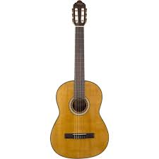
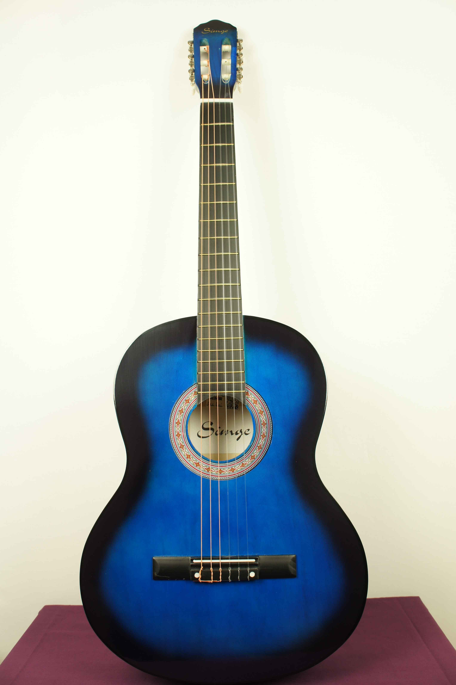
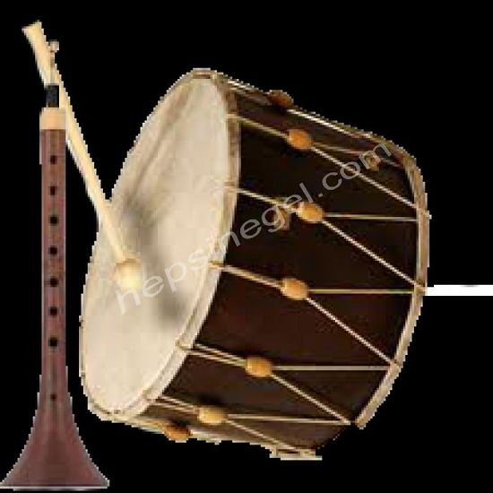
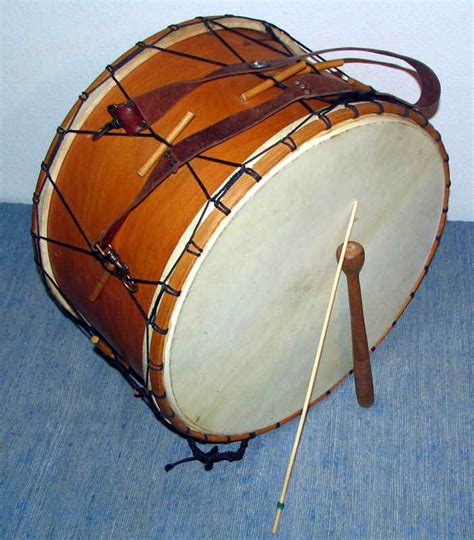
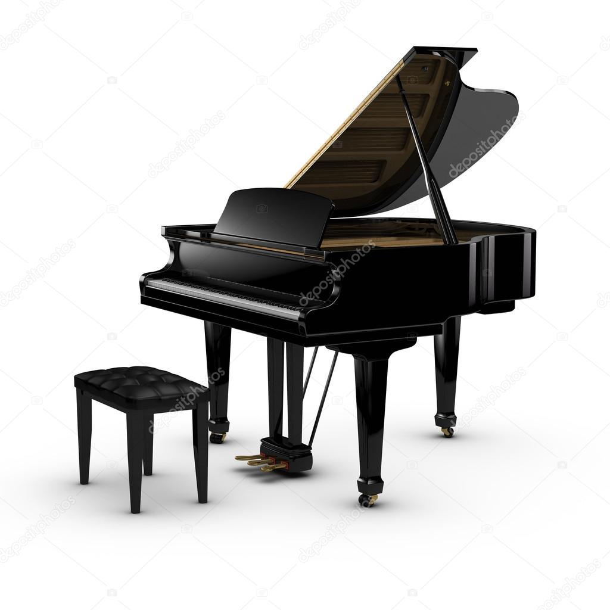

Ürünlerimiz
Klasik gitar tüm gitar türlerinin atasıdır.Diğer gitar türleri klasik gitarın çatısı altında türemiştir.Gövdesinin tam ortasında, “ses deliği” adı verilen yuvarlak bir boşluk bulunmaktadır. 5000TL
2 Görünüş itibariyle klasik gitarı andıran akustik gitarın gövdesi klasik gitardan biraz daha şişman ve basıktır. Daha dar bir sapa sahiptir.Yani teller birbirlerine klasik gitara nazaran daha yakındır.5000TL
3 Elektro gitar ise akustik olmayan bir gövde üzerine 20-24 perde arasında ses değiştiriciye sahip bir enstrümandır. Akustik gitarın elektronik özellikler kazandırılmış hali olarak tanımlanabilir. 5000TL
4 Özenle yapılmış kaliteli davul.4000TL
5 Bir başka özel davul.2000TL
6 Siyah kaliteli Piyano.10000TL